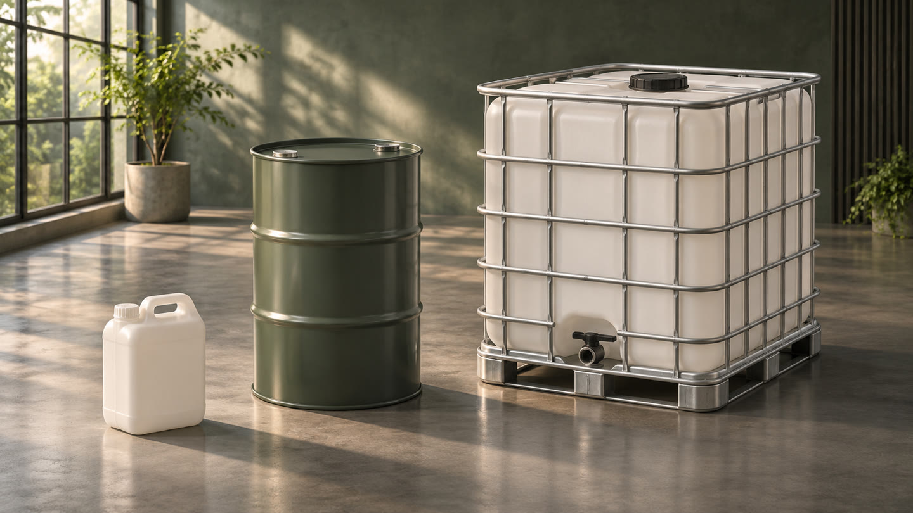

Как выбрать фасовку ацетата хрома
Один и тот же 50%-й раствор поставляется в канистре, бочке и еврокубе. Выбор зависит от массы заказа и от того, как участок принимает и расходует реагент.
Читать статью
Производим химическую продукцию в Дзержинске и поставляем сырьё для промышленных предприятий.
Поставляем химическое сырьё из России и стран Азии. В Дзержинске выпускаем собственные реагенты и моющие средства.
О компанииХимическое сырьё, реагенты собственного производства и тара.
Вся продукцияРассмотрим выпуск по вашей технологической карте. Уточним спецификацию, объём и фасовку партии.
Возможности площадки
Согласуем требования к продукту, партии и необходимым документам.
Подбираем аппарат под технологию и объём. На площадке пять реакторов ёмкостью от 1 до 6,3 м³.
Обсуждаем тару, маркировку и условия отгрузки со складом заказчика.
Один и тот же 50%-й раствор поставляется в канистре, бочке и еврокубе. Выбор зависит от массы заказа и от того, как участок принимает и расходует реагент.
Читать статью
Динатриевая и тетранатриевая соли ЭДТА обе связывают ионы металлов. Для закупки важно указать нужную форму соли, потому что у позиций разные идентификаторы и требования к спецификации.
Читать статью
Первое обращение должно дать технологу представление о продукте, партии и упаковке. Подробности технологии обсуждаются после предварительной оценки задачи.
Читать статью
Откройте карточку товара и нажмите «Запросить предложение». Укажите требуемую марку, массу или объём, нужную тару и город доставки.
Везен отгружает от одной канистры или мешка. Для некоторых позиций действует собственный минимальный объём. Уточните его в карточке или у отдела продаж.
Отправьте запрос с названием и требуемым объёмом. Отдел продаж подтвердит наличие, срок комплектации и стоимость.
Да, запросите нужные документы на конкретную марку и партию. Доступные ТУ и паспорта производителя размещены в разделе «Документы и поставка» карточки.
Откройте характеристики товара. Для жидкого сырья в каталоге встречаются канистры, бочки, еврокубы и цистерны. Совместимость тары с продуктом подтверждают при заказе.
Укажите адрес выгрузки и размер партии. Отдел продаж уточнит возможный способ доставки и срок с учётом вида груза и фасовки.
Склад находится в промышленной зоне Дзержинска. Точный адрес, время и порядок въезда согласуйте с менеджером при оформлении заказа.
Сообщите требуемый CAS, обозначение по ТУ или ГОСТ и параметры из спецификации. Возможность замены оценивают по назначению и требованиям к продукту.
Укажите продукт, объём партии и требования к упаковке. Возможность выпуска оценивают по технологической карте и оборудованию.
Позвоните по номеру +7 952 448-48-97 или отправьте заявку через страницу контактов.